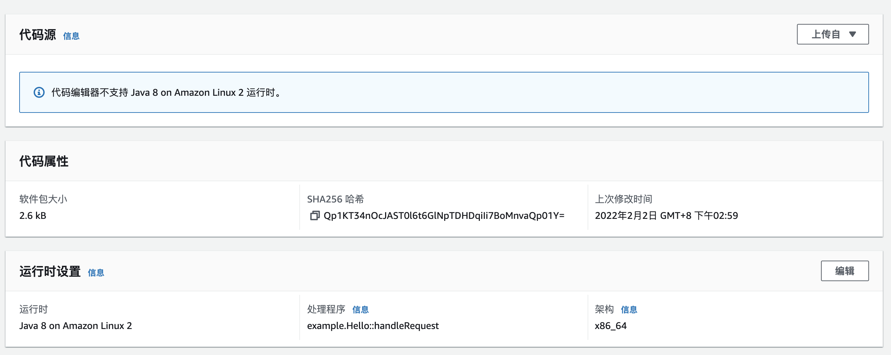

在AWS上部署一个Lambda函数
什么是Lambda函数
Lambda是AWS面向开发人员推出的应用层级Serverless解决方案。使用通过符合Lambda规范的代码，在AWS的环境上快速部署线上使用。通过配置支持自动扩容，安全，权限，网关等，完全屏蔽底层服务器管理的功能。
Lambda的优势
根据AWS的Blog的宣传，我们看到Serverless的优势包括一下几个点
|
|
我们部署一个Lambda，体验一下这些功能点。
AWS Lambda实践
基本使用
Lambda的函数开发，支持多种语言版本，包括Node.js 12.X，14.X, .Net Core 3.1, Python3.6-3.9, Ruby2.7,Java 8,11等，我们开发一个Java版本的函数。 可以通过本地IDE编写，也可以通过AWS提供的线上控制台，工具包等多种开发环境。
我们通过Java版本来体验一下。 本文代码可以在
下载。本案例是个使用gradle的Springboot的工程。
也可以参照官方推荐的JAVA DEMO
https://github.com/awsdocs/aws-lambda-developer-guide/tree/main/sample-apps/blank-java
基本概念
Function：核心代码。 Trigger：触发器。例如APIGateway，SNS等，用来调用函数的资源。 Event：调用函数的数据。 Layer：Lambda 层是可以包含其他代码或其他内容的 .zip 文件归档。层可以包含库、自定义运行时、数据或配置文件。 其他的，不影响使用，可以慢慢扩展。
核心函数解读
|
|
代码引入了APIGateway调用方式的函数代理，做了简单的函数名称打印，准备做一个API网关调用的展示。 这个代码就是函数的入口和全部业务实现。
创建层
Layer（层）是个可选项，一个函数最多添加5层。层的引入，是为了缩小核心代码上传的部署成本，促进代码共享和责任分离，把公共部分，主要的jar包，放到公共层中，减少核心业务代码的变更成本。 执行Readme中的层编译代码生成层
|
|
按照下属步骤部署一个新层
- 添加层

- 创建层

- 创建完成


部署函数
执行Readme中的层编译代码生成层
|
|
-
按照下属步骤部署一个函数 
-
修改运行时设置的处理程序


运行测试
可以在本画面进行基本的调用测试
选择测试，可以直接点击测试，也可以模拟一个ApiGateway的调用，内容如下
|
|
- 执行测试

- 执行成功。点击（日志），可以看到这次的测试结果


到此为止，我们已经部署了一个线上的应用服务。
部署一个API网关，提供面向HTTP的访问。
- 创建网关
- 创建资源
- 创建方法

- 部署网关

AWS已经帮我们生成了一个对外可访问的网关，本地执行CURL，已经可以访问到。
|
|
到现在为止，在没有任何关于服务器的设定配置的情况下，我们已经在互联网上部署了一个对外提供服务的应用。整个过程非常简单方便。小小的体验了一把无服务化。 后续我们会针对Lambda的函数特点做一些简单的测试，包括连续缩放和性能。
Lambda 和 EKS（K8s）的对比
截止到本文发表，EKS已经是个云原生毕业，经得住大规模商业化的考验的成熟产品。可以适配多种云环境，支撑面向应用的屏蔽底层容器环境的差异性。但需要具备ec2/pod/container级别的处理能力，这与通常的业务实现的技术领域不同。 Lambda这类Serverless服务，现在还是在经历高速商业化发展的初期。现在有一些制约：有一定的代码侵入性，并且尚不支持一个标准协议提供跨平台迁移性。系统设计层面，对比传统的领域模型，也要有一定的理念转变。但优点也非常突：屏蔽了底层容器级别的技术处理复杂度，而且在经济上有很大的提升空间。 可以根据具体的项目场景和资源配置，灵活的选择这两种方案。
个人角度看，他们可能不是竞争对手的关系，而是一种发展关系。
无服务器对于K8s，就像K8s对于容器一样。